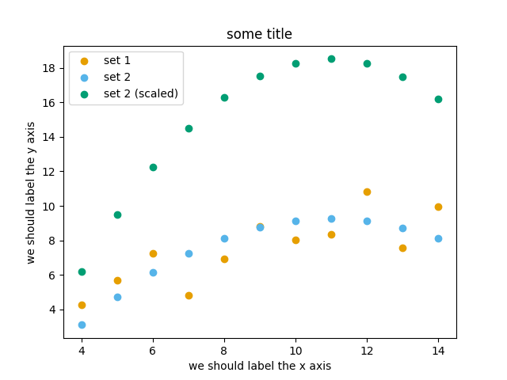
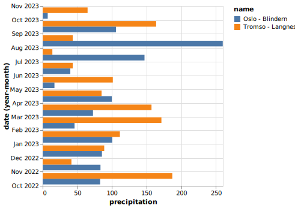

This is a list of all exercises and solutions in this lesson, mainly
as a reference for helpers and instructors. This list is
automatically generated from all of the other pages in the lesson.
Any single teaching event will probably cover only a subset of these,
depending on their interests.
If you aren’t set up with JupyterLab yet or these things don’t work, use this time to see the installation instructions and ask us any questions you may have.
Start Jupyter in the directory you want to use for this course.
If you are using Miniforge from the command line, you can navigate with cd to a directory of your choice.
If you are starting from the Anaconda Navigator, change to the directory you want to use.
Create a Python 3 notebook file. Save it. In the next section, you will add stuff to it.
(optional, but will be done in future lessons) Explore the file browser, try making some non-notebook text/py/md files and get used to that.
(optional, advanced) Look at the notebook file in a text
editor. How does it work?
If everything works for you, this will end very quickly. You can begin reading the next sections independently.
Run some slightly less trivial code, like print out the first
ten Fibonacci numbers.
Make a Markdown cell above your code cell and give it a title and some description of your function. Use the reference to add a heading, bullet list, and some (bold, italic, or inline code)
Use the %%timeit magic function to time your Fibonacci
function.
Again using %%timeit, figure out the fastest way to sum the
numbers 0 to 1000000.
Once you are done, close your notebooks and other tabs you don’t need. Check the running sessions (hint: thin left sidebar) and shut down these kernels.
# Fibonacci*Start with two variables `a` and `b`*Repeat 10 times
*Print old `a`, then increment both
*Makes use of the Python *tuple assignment*: `a, b = new_a, new_b`
In this case, the print() statements get out of hand, so we comment that out. In general, writing output usually takes a lot of time reletive to the computation, so we don’t want to time that (unless output is the main point of the code, then we do have to time it!
%%timeita,b=0,1foriinrange(10):#print(a)a,b=b,a+b
395 ns ± 10.2 ns per loop (mean ± std. dev. of 7 runs, 1000000 loops each)
Have any of you used Jupyter in a way that became impossible to
maintain: too many files, code all spread out, not able to find
your code and run it in the right order. How did you solve that?
On the other hand, what are your successes with Jupyter?
How can you prevent these problems by better development strategies?
Datatypes Try out np.arange(10) and np.linspace(0,9,10), what is the difference? Can you adjust one to do the same as the other?
Datatypes Create a 3x2 array of random float numbers (check numpy.random.random()) between 0 and 1. Now change the arrays datatype to int (array.astype). How does the array look like?
Reshape Create a 3x2 array of random integer numbers between 0 and 10. Change the shape of the array (check array.reshape) in any way possible. What is not possible?
NumPyI/O Save above array to .npy file (numpy.save()) and read it in again.
np.arange(10) results in array([0,1,2,3,4,5,6,7,8,9]) with dtype int64,
while np.linspace(0,9,10) results in array([0.,1.,2.,3.,4.,5.,6.,7.,8.,9.]) with dtype float64.
Both np.linspace and np.arange take dtype as an argument and can be adjusted to match each other in that way.
Datatypes eg a=np.random.random((3,2)). a.astype('int') results in an all zero array, not as maybe expected the rounded int (all numbers [0, 1) are cast to 0).
Reshape eg b=np.random.randint(0,10,(3,2)).
b.reshape((6,1)) and b.reshape((2,3)) possible.
It is not possible to reshape to shapes using more or less elements than b.size=6, so for example b.reshape((12,1)) gives an error.
# 1-dimensional arraysx=np.array([1,10,100])# TODO: similar to `x`, create another 1-dimensional array with shape (3,)# y = np.array(...)# 2-dimensional arraysa=np.array([[1,2],[3,4]])# TODO: similar to `a`, create another 2-dimensional array with shape (2, 2)# b = np.array(...)
Matrix multiplication What is the difference between numpy.multiply and numpy.dot() ? Try calling these functions
with either x,y (1D arrays) or a,b (2D arrays) as input and observe the behaviour.
Axis What is the difference between np.sum(a,axis=1) vs
np.sum(a,axis=0) on a two-dimensional array? What if you leave out the axis parameter?
Matrix multiplicationnp.multiply does elementwise multiplication on two arrays. The function np.dot enables:
- dot product and returns a scalar, when both input arrays are 1 dimensional
- matrix multiplication and returns back a 2-dimensional array, when both the input arrays are 2 dimensional
However, a@b is preferred over np.dot(a,b) to express matrix multiplication.
Axisaxis=1 does the operation (here: np.sum) over each row, while axis=0 does it over each column. If axis is left out, the sum of the full array is given.
View vs copy: The change in b has also changed the array a!
This is because b is merely a view or a shallow copy of a part of array a. Both
variables point to the same memory. Hence, if one is changed, the other
one also changes.
In this example, if you need to keep the original array as is, use
np.copy(a) or np.copy(a[:,0])
to create a new deep copy of the whole or a slice of array respectively,
before updating b.
In-place addition: Create an array, add it to itself using a
ufunc.
In-place addition (advanced): Create an array of
dtype='float', and an array of dtype='int'. Try to use the
int array as the output argument of the first two arrays.
Output arguments and timing Repeat the initial b=a**2 example using a ufunc and time it. Can you make
it even faster using the output argument?
x=np.array([1,2,3])id(x)# get the memory-ID of xnp.add(x,x,out=x)# Third argument is output arraynp.add(x,x,out=x)print(x)id(x)# get the memory-ID of x# - notice it is the same
Note that np.add() writes the result to the output array (out=)
and the function returns that same array.
Output arguments and timing In this case, on my computer, it was
actually slower (this is due to it being such a small array!):
a=np.arange(10_000)b=np.zeros(10_000)
%%timeitnumpy.square(a,out=b)
This is a good example of why you always need to time things
before deciding what is best.
Note: the _ inside numbers is just for human readability and is
ignored by python.
If you have extra time, try these out. These are advanced and
optional, and will not be done in most courses.
Reverse a vector. Given a vector, reverse it such that the last
element becomes the first, e.g. [1,2,3] => [3,2,1]
Create a 2D array with zeros on the borders and 1 inside.
Create a random array with elements [0, 1), then add 10 to all
elements in the range [0.2, 0.7).
What is np.round(0.5)? What is np.round(1.5)? Why?
In addition to np.round, explore numpy.ceil, numpy.floor,
numpy.trunc. In particular, take note of how they behave with
negative numbers.
Recall the identity \(\sin^2(x) + \cos^2(x) = 1\). Create a
random 4x4 array with values in the range [0, 10). Now test the
equality with numpy.equal. What result do you get with
numpy.allclose() instead of np.equal?
Create a 1D array with 10 random elements. Sort it.
For the random array in question 8, instead of sorting it, perform
an indirect sort. That is, return the list of indices which would
index the array in sorted order.
Create a 4x4 array of zeros, and another 4x4 array of ones. Next
combine them into a single 8x4 array with the content of the zeros
array on top and the ones on the bottom. Finally, do the same,
but create a 4x8 array with the zeros on the left and the ones on
the right.
NumPy functionality Create two 2D arrays and do matrix multiplication
first manually (for loop), then using the np.dot function. Use %%timeit
to compare execution times. What is happening?
Write a Python script that uses NumPy to generate 100 million (100000000)
random numbers and add them all together. Time how long it takes to execute.
Can you beat the C version?
If you are having trouble with this, we recommend completing the
basic NumPy lesson before continuing with this
advanced lesson. If you are taking a live course - don’t
worry, watch and learn and explore some during the exercises!
Write a function called ravel() that takes the row and column of an
element in a 2D matrix and produces the appropriate index in an 1D array,
where all the rows are concatenated. See the image above to remind yourself
how each row of the 2D matrix ends up in the 1D array.
The function takes these inputs:
row The row of the requested element in the matrix as integer index.
col The column of the requested element in the matrix as integer index.
n_rows The total number of rows of the matrix.
n_cols The total number of columns of the matrix.
Here are some examples of input and desired output:
A little known feature of NumPy is the numpy.stride_tricks module
that allows you to modify the strides attribute directly. Playing
around with this is very educational.
Create a (5 ✕ 100 000 000 000) array containing on the first row all
1’s, the second row all 2’s, and so on. Start with an 1D array
a=np.array([1.,2.,3.,4.,5.])
and modify its shape and strides attributes using
numpy.lib.stride_tricks.as_strided() to obtain the desired 2D
matrix:
The transpose() function can be implemented like this:
fromnumpy.lib.stride_tricksimportas_strideddeftranspose(a):returnas_strided(a,shape=a.shape[::-1],strides=a.strides[::-1])# Testing the function on a small matrixa=np.array([[1,2,3],[4,5,6]])print('Before transpose:')print(a)print('After transpose:')print(transpose(a))
By setting one of the .strides to 0, we can repeat a value
infinitely many times without using any additional memory:
In the Titanic passenger list dataset,
investigate the family size of the passengers (i.e. the “SibSp” column).
What different family sizes exist in the passenger list? Hint: try the unique() method
What are the names of the people in the largest family group?
(Advanced) Create histograms showing the distribution of family sizes for
passengers split by the fare, i.e. one group of high-fare passengers (where
the fare is above average) and one for low-fare passengers
(Hint: instead of an existing column name, you can give a lambda function
as a parameter to hist() to compute a value on the fly. For example
lambdax:"Poor"ifdf["Fare"].loc[x]<df["Fare"].mean()else"Rich").
Solution
Existing family sizes:
titanic["SibSp"].unique()
We get 8 from above. There is no Name column, since we
made Name the index when we loaded the dataframe with
read_csv, so we use pandas.DataFrame.index to get
the names. So, names of members of largest family(ies):
What country has received the largest number of Nobel prizes, and how many?
How many countries are represented in the dataset? Hint: use the describe method
on the bornCountryCode column.
Create a histogram of the age when the laureates received their Nobel prizes.
Hint: follow the above steps we performed for the lifespan.
List all the Nobel laureates from your country.
Now more advanced steps:
Now define an array of 4 countries of your choice and extract
only laureates from these countries (you need to look at the
data and find how countries are written, and replace COUNTRY
with those strings):
Use groupby() to compute how many nobel prizes each country received in
each category. The size() method tells us how many rows, hence nobel
prizes, are in each group:
nobel.groupby(['bornCountry','category']).size()
(Optional) Create a pivot table to view a spreadsheet like structure, and view it
First add a column “number” to the nobel dataframe containing 1’s
(to enable the counting below). We need to make a copy of
subset, because right now it is only a view:
Download the NARR_19930313_0000.nc dataset have a look at all Data variables. Calculate the geopotential height at x=5148.3726 averaged over y and return the median value. You can use the .plot() method to check on the way whether you use the correct dimensions and indices.
Let’s change from climate science to finance for this example. Put the stock prices and trading volumes of three companies in one dataset. Create an Xarray Dataset that uses time and company as dimensions and contains two DataArrays: stock_price and trading_volume. You can download the data as a pandas DataFrame with the following code:
Exercise Matplotlib-1: extend the previous example (15 min)
Extend the previous plot by also plotting this set of values but this time
using a different color (#56B4E9):
# this is dataset 2data2_y=[9.14,8.14,8.74,8.77,9.26,8.10,6.13,3.10,9.13,7.26,4.74]
Then add another color (#009E73) which plots the second dataset, scaled
by 2.0.
# here we multiply all elements of data2_y by 2.0data2_y_scaled=[y*2.0foryindata2_y]
Try to add a legend to the plot with matplotlib.axes.Axes.legend() and searching the web for clues on
how to add labels to each dataset.
You can also consult this great
quick start guide.
At the end it should look like this one:

Experiment also by using named colors (e.g. “red”) instead of the hex-codes.
importmatplotlib.pyplotasplt# this is dataset 1 from# https://en.wikipedia.org/wiki/Anscombe%27s_quartetdata_x=[10.0,8.0,13.0,9.0,11.0,14.0,6.0,4.0,12.0,7.0,5.0]data_y=[8.04,6.95,7.58,8.81,8.33,9.96,7.24,4.26,10.84,4.82,5.68]# this is dataset 2data2_y=[9.14,8.14,8.74,8.77,9.26,8.10,6.13,3.10,9.13,7.26,4.74]# here we multiply all elements of data2_y by 2.0data2_y_scaled=[y*2.0foryindata2_y]fig,ax=plt.subplots()ax.scatter(x=data_x,y=data_y,c="#E69F00",label="set 1")ax.scatter(x=data_x,y=data2_y,c="#56B4E9",label="set 2")ax.scatter(x=data_x,y=data2_y_scaled,c="#009E73",label="set 2 (scaled)")ax.set_xlabel("we should label the x axis")ax.set_ylabel("we should label the y axis")ax.set_title("some title")ax.legend()# uncomment the next line if you would like to save the figure to disk# fig.savefig("exercise-plot.png")
Exercise Customization-2: preparing a plot for publication (15 min)
Often we need to create figures for presentation slides and for publications
but both have different requirements: for presentation slides you have the whole
screen but for a figure in a publication you may only have few centimeters/inches.
For figures that go to print it is good practice to look at them at the size
they will be printed in and then often fonts and tickmarks are too small.
Your task is to make the tickmarks and the axis label font larger, using
Matplotlib parts of a figure
and web search, and to arrive at this:
Plotting-1: Using visual channels to re-arrange plots
Try to reproduce the above plots if they are not already in your notebook.
Above we have plotted the monthly precipitation for two cities side by side
using a stacked plot. Try to arrive at the following plot where months are
along the y-axis and the precipitation amount is along the x-axis:

Ask the Internet or AI how to change the axis title from “precipitation”
to “Precipitation (mm)”.
Modify the temperature range plot to show the temperature ranges for the
two cities side by side like this:
Select one example that is close to your current/recent visualization project
or simply interests you.
First try to reproduce this example, as-is, in the Jupyter Notebook.
If you get the error “ModuleNotFoundError: No module named
‘vega_datasets’”, then try one of these examples: (they do not need the “vega_datasets” module)
Slider cutoff
(below you can find a walk-through for this example)
Then try to print out the data that is used in this example just before the call of the plotting function
to learn about its structure. Consider writing the data to file before changing it.
Then try to modify the data a bit.
If you have time, try to feed it different, simplified data.
This will be key for adapting the examples to your projects.
Example walk-through for the slider cutoff example
Next, there is a lot of code that I don’t (need to) understand yet but my eyes are trying to find
alt.Chart which tells me that the data must be the “df” in alt.Chart(df):
Saving the data to file often helps me to see the structure of the data and now
I am in a position to replace this with my own data. I create a file called
“mydata.csv” and there I use the maximum temperatures for months 1-10 from the
Tromso monthly data which we used further up:
You have a model that you have been training for a while.
Lets assume it’s a relatively simple neural network (consisting of a
network structure and it’s associated weights).
Let’s consider 2 scenarios
A: You have a different project, that is supposed to take this model, and
do some processing with it to determine it’s efficiency after different
times of training.
B: You want to publish the model and make it available to others.
What are good options to store the model in each of these scenarios?
Some export into a binary format that can be easily read. E.g. pickle
or a specific export function from the library you use.
It also depends on whether you intend to make the intermediary steps
available to others. If you do, you might also want to consider storing
structure and weights separately or use a format specific for the
type of model you are training to keep the data independent of the
library.
B:
You might want to consider a more general format that is supported by
many libraries, e.g. ONNX, or a format that is specifically designed
for the type of model you are training.
You might also want to consider additionally storing the model in a way
that is easily readable by humans, to make it easier for others to
understand the model.
Download the weather_observations.ipynb and upload them to your Jupyterlab. The script plots the temperature data for Tapiola in Espoo. The data is originally from rp5.kz and was slightly adjusted for this lecture.
Hint: Copy the URL above (right-click) and in JupyterLab, use
File → Open from URL → Paste the URL. It will both download it to
the directory JupyterLab is in and open it for you.
Open a terminal in Jupyter: File → New Launcher, then click
“Terminal” there. (if you do it this way, it will be in the right
directory. File → New → Terminal might not be.)
Convert the Jupyter script to a Python script by calling:
Take the Python script (weather_observations.py) we have written in the preceding exercise and use
argparse to specify the input (URL) and output files and allow the start and end dates to be set.
Hint: try not to do it all at once, but add one or two arguments, test, then add more, and so on.
Hint: The input and output filenames make sense as positional arguments, since they must always be given. Input is usually first, then output.
Hint: The start and end dates should be optional parameters with the defaults as they are in the current script.
Execute your script for a few different time intervals (e.g. from January 2019 to June 2020, or from May 2020 to October 2020).
Also try using this data for Cairo: https://raw.githubusercontent.com/AaltoSciComp/python-for-scicomp/master/resources/data/scripts/weather_cairo.csv
importpandasaspdimportargparseparser=argparse.ArgumentParser()parser.add_argument("input",type=str,help="Input data file")parser.add_argument("output",type=str,help="Output plot file")parser.add_argument("-s","--start",default="01/01/2019",type=str,help="Start date in DD/MM/YYYY format")parser.add_argument("-e","--end",default="16/10/2021",type=str,help="End date in DD/MM/YYYY format")args=parser.parse_args()# load the dataweather=pd.read_csv(args.input,comment='#')# define the start and end time for the plotstart_date=pd.to_datetime(args.start,dayfirst=True)end_date=pd.to_datetime(args.end,dayfirst=True)# preprocess the dataweather['Local time']=pd.to_datetime(weather['Local time'],dayfirst=True)# select the dataweather=weather[weather['Local time'].between(start_date,end_date)]# plot the dataimportmatplotlib.pyplotasplt# start the figure.fig,ax=plt.subplots()ax.plot(weather['Local time'],weather['T'])# label the axesax.set_xlabel("Date of observation")ax.set_ylabel("Temperature in Celsius")ax.set_title("Temperature Observations")# adjust the date labels, so that they look nicerfig.autofmt_xdate()# save the figurefig.savefig(args.output)
Download the optionsparser.py
function and load it into your working folder in Jupyterlab (Hint: in JupyterLab, File → Open from URL).
Modify the previous script to use a config file parser to read all arguments. The config file is passed in as a single argument on the command line
(using e.g. argparse or sys.argv) still needs to be read from the command line.
#!/usr/bin/env python# coding: utf-8importpandasaspdfromoptionsparserimportget_parametersimportargparse# Lets start reading our confg file. we'll use argparse to get the config file.parser=argparse.ArgumentParser()parser.add_argument('input',type=str,help="Config File name ")args=parser.parse_args()# Set optional parameters with default values and required parameter values with their typedefaults={"xlabel":"Date of observation","title":"Weather Observations","start":"01/06/2021","end":"01/10/2021","output":"weather.png","ylabel":"Temperature in Celsius","data_column":"T",}required={"input":str}# now, parse the config fileparameters=get_parameters(args.input,required,defaults)# load the dataweather=pd.read_csv(parameters.input,comment='#')# obtain start and end datestart_date=pd.to_datetime(parameters.start,dayfirst=True)end_date=pd.to_datetime(parameters.end,dayfirst=True)# Data preprocessingweather['Local time']=pd.to_datetime(weather['Local time'],dayfirst=True)# select the dataweather=weather[weather['Local time'].between(start_date,end_date)]# Data plottingimportmatplotlib.pyplotasplt# start the figure.fig,ax=plt.subplots()ax.plot(weather['Local time'],weather['T'])# label the axesax.set_xlabel("Date of observation")ax.set_ylabel("Temperature in Celsius")ax.set_title("Temperature Observations")# adjust the date labels, so that they look nicerfig.autofmt_xdate()# save the figurefig.savefig(parameters.output)
In this exercise we will use the Scalene profiler to find out where most of the time is spent
and most of the memory is used in a given code example.
Please try to go through the exercise in the following steps:
Make sure scalene is installed in your environment (if you have followed
this course from the start and installed the recommended software
environment, then it is).
Before you run the profiler, try to predict in which function the code
(the example code is below)
will spend most of the time and in which function it will use most of the
memory.
Save the example code as example.py and
run the scalene profiler on the following code example and browse the
generated HTML report to find out where most of the time is spent and where
most of the memory is used:
$ scaleneexample.py
Alternatively you can do this (and then open the generated file in a browser):
$ scaleneexample.py--html>profile.html
You can find an example of the generated HTML report in the solution below.
Does the result match your prediction? Can you explain the results?
Example code (example.py):
"""The code below reads a text file and counts the number of unique words in it(case-insensitive)."""import redef count_unique_words1(file_path: str) -> int: with open(file_path, "r", encoding="utf-8") as file: text = file.read() words = re.findall(r"\b\w+\b", text.lower()) return len(set(words))def count_unique_words2(file_path: str) -> int: unique_words = [] with open(file_path, "r", encoding="utf-8") as file: for line in file: words = re.findall(r"\b\w+\b", line.lower()) for word in words: if word not in unique_words: unique_words.append(word) return len(unique_words)def count_unique_words3(file_path: str) -> int: unique_words = set() with open(file_path, "r", encoding="utf-8") as file: for line in file: words = re.findall(r"\b\w+\b", line.lower()) for word in words: unique_words.add(word) return len(unique_words)def main(): # book.txtisdownloadedfromhttps://www.gutenberg.org/cache/epub/2600/pg2600.txt
_result = count_unique_words1("book.txt") _result = count_unique_words2("book.txt") _result = count_unique_words3("book.txt")if __name__ == "__main__": main()
Solution
Result of the profiling run for the above code example. You can click on the image to make it larger.
Results:
Most time is spent in the count_unique_words2 function.
Most memory is used in the count_unique_words1 function.
Explanation:
The count_unique_words2 function is the slowest because it uses a list
to store unique words and checks if a word is already in the list before
adding it.
Checking whether a list contains an element might require traversing the
whole list, which is an O(n) operation. As the list grows in size,
the lookup time increases with the size of the list.
The count_unique_words1 and count_unique_words3 functions are faster
because they use a set to store unique words.
Checking whether a set contains an element is an O(1) operation.
The count_unique_words1 function uses the most memory because it creates
a list of all words in the text file and then creates a set from that
list.
The count_unique_words3 function uses less memory because it traverses
the text file line by line instead of reading the whole file into memory.
What we can learn from this exercise:
When processing large files, it can be good to read them line by line
or in batches
instead of reading the whole file into memory.
It is good to get an overview over standard data structures and their
advantages and disadvantages (e.g. adding an element to a list is fast but checking whether
it already contains the element can be slow).
Do the following exercise or read the documentation and
understand the relevant functions of SciPy:
Define a function of one variable and using
scipy.integrate.quad
calculate the integral of your function in the
interval [0.0,4.0]. Then vary the interval and also modify the function and check
whether scipy can integrate it.
fromscipyimportintegratedefmyfunction(x):# you need to define resultreturnresultintegral=integrate.quad(myfunction,0.0,4.0)print(integral)
quad
uses the Fortran library QUADPACK, which one can assume is pretty
good. You can also see a whole lot of scientific information about
the function on the docs page - including the scientific names of
the methods used.
Do the following exercise or read the documentation and
understand the relevant functions of SciPy:
Use the SciPy sparse matrix functionality to create a random sparse
matrix with a probability of non-zero elements of 0.05 and size 10000
x 10000. The use the SciPy sparse linear algebra support to calculate
the matrix-vector product of the sparse matrix you just created and a
random vector. Use the %timeit macro to measure how long it
takes. Does the optional format argument when you create the
sparse matrix make a difference?
Then, compare to how long it takes if you’d instead first convert the
sparse matrix to a normal NumPy dense array, and use the NumPy dot
method to calculate the matrix-vector product.
Can you figure out a quick rule of thumb when it’s worth using a
sparse matrix representation vs. a dense representation?
importnumpyimportscipy.sparsevector=numpy.random.random(10000)matrix=scipy.sparse.rand(10000,10000,density=.05,format='csc')# We time this linematrix.dot(vector)
From the top of the spare matrix module documentation, we can
see there are a variety of different available sparse matrix types:
bsr, coo, csr, csc, etc. These each represent a
different way of storing the matrices.
It seems that csr and csc are fairly fast. lil and
dok are slow but it says that these are good for creating
matrices with random insertions.
For example, csr takes 7ms, lil 42ms, dok 1600ms, and
converting to a non-sparse array matrix.toarray() and
multiplying takes 64ms on one particular computer.
This code allows us to time the performance at different
densities. It seems that with the csr format, sparse is better
below densities of around .4 to .5:
What libraries do you use in your work? What have you made, which
you could have reused from some other source. What have you used
from some other source that you wished you had re-created?
Below are some links to some packages, both public and made by the
authors of this lesson. Evaluate them, considering “would I use
this in my project?”
networkx: This seems to be a relatively large, active project
using best practices. Probably usable.
I would probably use it if I had to, but would prefer not to.
This (written by one of the authors of this lesson) has no
documenting, no community, no best practices, and is very old.
Probably not a good idea to try to use it
This project uses best practices, but doesn’t seem to have a big
community. It’s probably fine to use, but who knows if it will
be maintained 10 years from now. It does have automated tests
via Github Actions (.github/workflows and the green checks),
so the authors have put some work into making it correct.
This (also written by one of the authors) looks like it was made
for a paper of some sort. It has some minimal documentation,
but still is missing many best practices and is clearly not
maintained anymore (look at the ancient pull request). Probably
not a good idea to use unless you have to.
This project has a pretty website, and some information. But
seems to not be using best practices of an open repository, and
custom locations which could disappear at any time.
You notice that several of the older projects here were written by
one of the authors of this lesson. It goes to show that everyone
starts somewhere and improves over time - don’t feel bad if your
work isn’t perfect, as long as you keep trying to get better!
Dependencies-2: Package language detective (5 min)
Think about the following sentences:
Yes, you can install my package with pip from GitHub.
I forgot to specify my channels, so my packages came from the defaults.
I have a Miniforge installation and I use mamba to create my environments.
What hidden information is given in these sentences?
Solution
The package is provided as a pip package. However, it is most likely
not uploaded to PyPI as it needs to be installed from a repository.
In this case the person saying the sentence is most likely using
Anaconda or Miniconda because these tools use the defaults-channel
as the default channel. They probably meant to install software from
conda-forge, but forgot to specify the channel.
Miniforge uses conda-forge as the default channel. So unless some
other channel has been specified, packages installed with these
tools come from conda-forge as well.
Binder-1: Discuss better strategies than only code sharing (10 min)
Lea is a PhD student in computational biology and after 2 years of intensive
work, she is finally ready to publish her first paper. The code she has used
for analyzing her data is available on GitHub but her supervisor who is an
advocate of open science told her that sharing code is not sufficient.
Why is it possibly not enough to share “just” your code?
What problems can you anticipate 2-5 years from now?
We form small groups (4-5 persons) and discuss in groups. If the workshop is
online, each group will join a breakout room.
If joining a group is not possible or practical, we use the shared document
to discuss this collaboratively.
Each group write a summary (bullet points) of the discussion in the workshop
shared document (the link will be provided by your instructors).
Binder-2: Exercise/demo: Make your notebooks reproducible by anyone (15 min)
Instructor demonstrates this. This exercise (and all following)
requires git/GitHub knowledge and accounts, which wasn’t a
prerequisite of this course. Thus, this is a demo (and might even
be too fast for you to type-along). Watch the video if you
are reading this later on:
Creates a GitHub repository
Uploads the notebook file
Then we look at the statically rendered version of the notebook on GitHub
Create a requirements.txt file which contains:
pandas==1.2.3
matplotlib==3.4.2
Commit and push also this file to your notebook repository.
Visit https://mybinder.org and copy paste the code under “Copy the text below …” into your README.md:
Check that your notebook repository now has a “launch binder”
badge in your README.md file on GitHub.
Try clicking the button and see how your repository is launched
on Binder (can take a minute or two). Your notebooks can now be explored and executed in the cloud.
Binder-3: Link a Github repository with Zenodo (optional)
Everything you deposit on Zenodo is meant to be kept (long-term archive).
Therefore we recommend to practice with the Zenodo “sandbox” (practice/test area)
instead:https://sandbox.zenodo.org
Log in to Zenodo with your GitHub account. Be aware that you may need to
authorize Zenodo application (Zenodo will redirect you back to GitHub for
Authorization).
Choose the repository webhooks options.
From the drop-down menu next to your email address at the top of the page, select GitHub.
You will be presented with a list of all your Github repositories.
Archiving a repo:
Select a repository you want to archive on Zenodo.
Toggle the “on” button next to the repository ou need to archive.
Click on the Repo that you want to reserve.
Click on Create release button at the top of the page. Zenodo will redirect you back to GitHub’s repo page to generate a release.
Trigger Zenodo to Archive your repository
Go to GitHub and create a release. Zenodo will automatically download a .zip-ball of each new release and register a DOI.
If this is the first release of your code then you should give it a
version number of v1.0.0. Add description for your release then click the
Publish release button.
Zenodo takes an archive of your GitHub repository each time you create a new Release.
Click on the repo, Zenodo will redirect you to a page that contains a DOI for your repo will the information that you added to the repo.
You can edit the archive on Zenodo and/or publish a new version of your software.
It is recommended that you add a description for your repo and fill in other metadata in the edit page. Instead of editing metadata
manually, you can also add a .zenodo.json or a CITATION.cff file to your repo and Zenodo will infer the metadata from this file.
Your code is now published on a Github public repository and archived on Zenodo.
Update the README file in your repository with the newly created zenodo badge.
Go to https://mybinder.org and fill information using Zenodo DOI (as shown on the animation below):
You can also get a Binder badge and update the README file in the
repository. It is good practice to add both the Zenodo badge and the
corresponding Binder badge.
Here, you find some code which calculates pi by a stochastic
algorithm. You don’t really need to worry how the algorithm works,
but it computes random points in a 1x1 square, and computes the
number that fall into a circle. Copy it into a Jupyter notebook
and use the %%timeit cell magic on the computation part (the
one highlighted line after timeit below):
importrandomdefsample(n):"""Make n trials of points in the square. Return (n, number_in_circle) This is our basic function. By design, it returns everything it\ needs to compute the final answer: both n (even though it is an input argument) and n_inside_circle. To compute our final answer, all we have to do is sum up the n:s and the n_inside_circle:s and do our computation"""n_inside_circle=0foriinrange(n):x=random.random()y=random.random()ifx**2+y**2<1.0:n_inside_circle+=1returnn,n_inside_circle%%timeitn,n_inside_circle=sample(10**6)pi=4.0*(n_inside_circle/n)pi
Using the multiprocessing.pool.Pool code from the lesson, run
the sample function 10 times, each with 10**5 samples
only. Combine the results and time the calculation. What is the
difference in time taken?
NOTE: If you’re working in an interactive environment and this
doesn’t work with the multiprocessing module, install and use
the multiprocess module instead!
(optional, advanced) Do the same but with
multiprocessing.pool.ThreadPool instead. This works identically
to Pool, but uses threads instead of different processes.
Compare the time taken.
You notice the version with ThreadPool is no faster, and
probably takes even longer. This is because this is a
pure-Python function which can not run simultaneously in
multiple threads.
How does the pool know how many CPUs to take? What happens if you
run on a computer cluster and request only part of the CPUs on a
node?
Solution
Pool by default uses one process for each CPU on the node - it
doesn’t know about your cluster’s scheduling system. It’s
possible that you have permission to use 2 CPUs but it is trying
to use 12. This is generally a bad situation, and will just
slow you down (and make other users on the same node upset)!
You either need to be able to specify the number of CPUs to use
(and pass it the right number), or make it aware of the cluster
system. For example, on a Slurm cluster you would check the
environment variable SLURM_CPUS_PER_TASK.
Whatever you do, document what your code is doing under the
hood, so that other users know what is going on (we’ve learned
this from experience…).
Exercise WebAPIs-2: Examine request and response headers
Request headers are similar to request parameters but usually define meta information regarding, e.g., content encoding (gzip, utf-8) or user identification (user-agent/user ID/etc., password/access token/etc.).
Exercise WebAPIs-3: Scrape links from a webpage (Advanced)
Let’s use Requests to get the HTML source code of www.example.com, examine it, and use the Beautiful Soup library to extract links from it. Note: This requires the extra bs4 Python package to be installed, which was not in our initial requirements. Consider this a demo.
Dataset might not be completely the same. Sometimes the CSV format cannot
fully represent a floating point value, which will result in rounding errors.